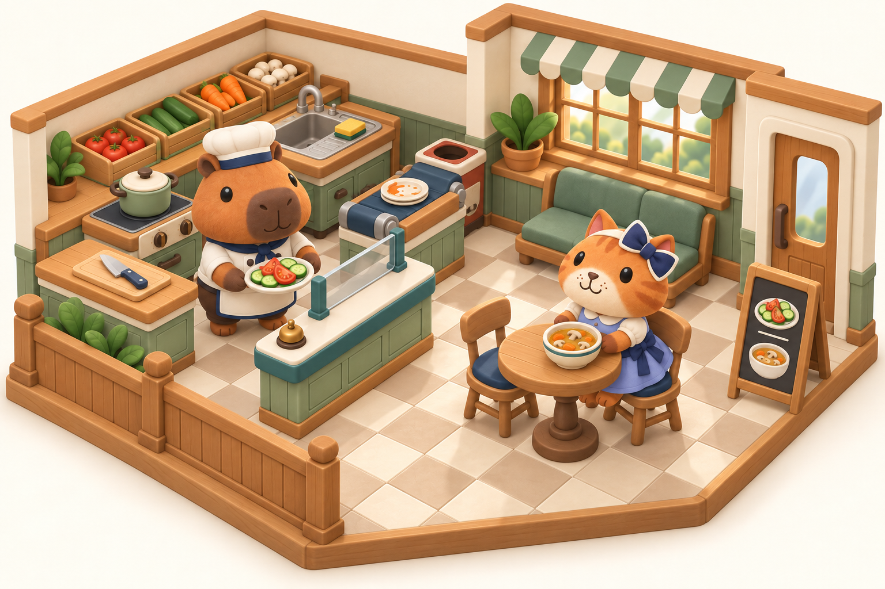
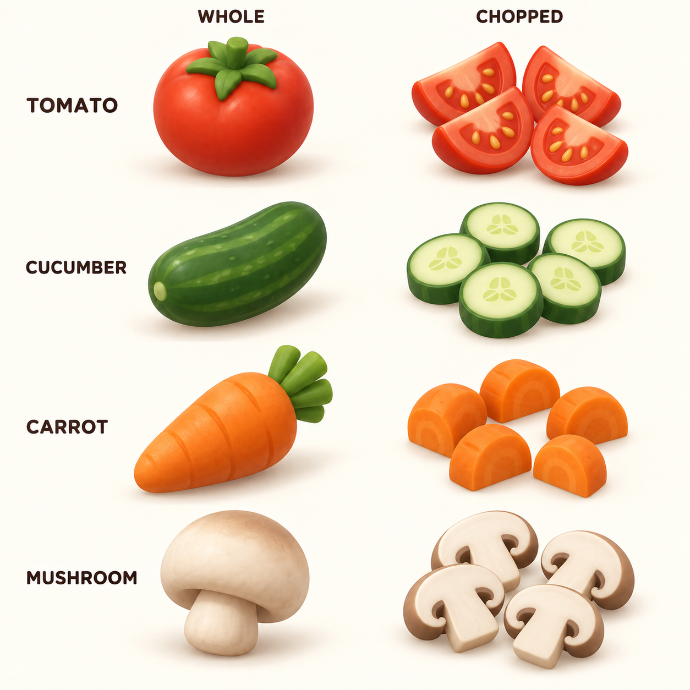
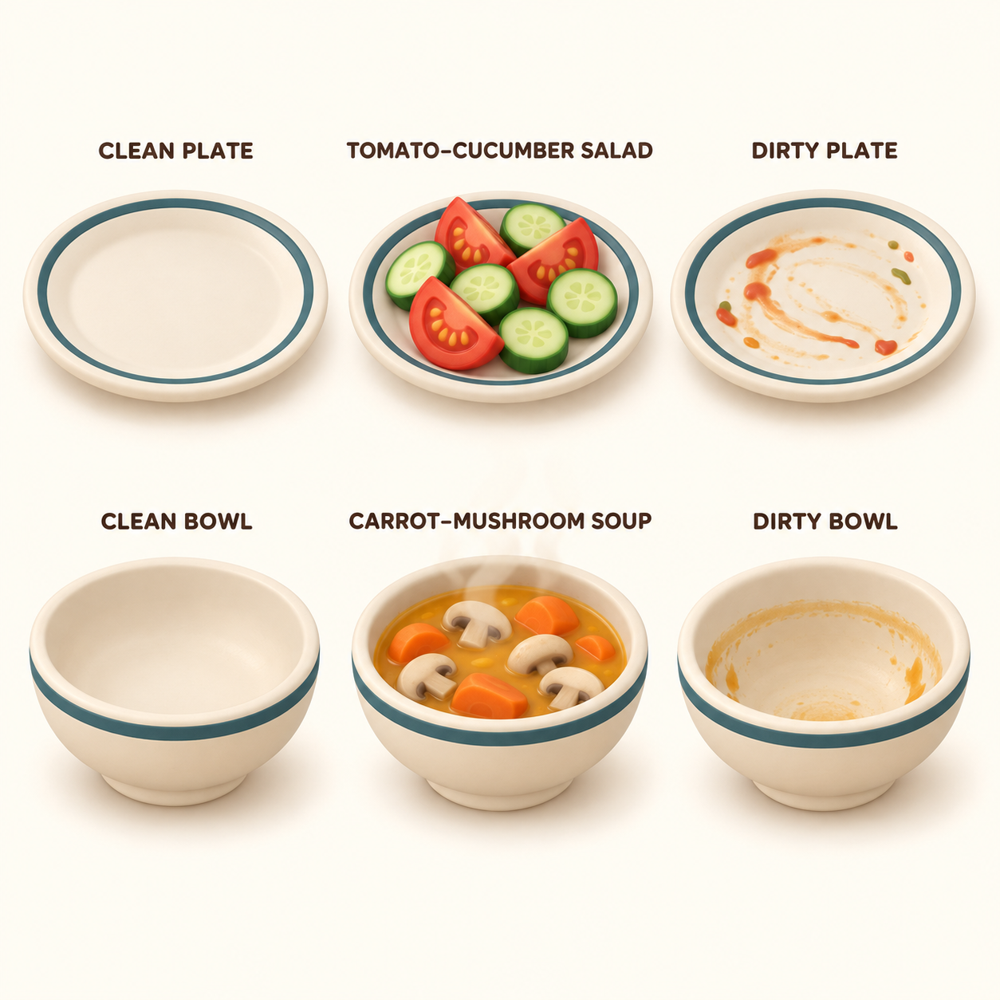
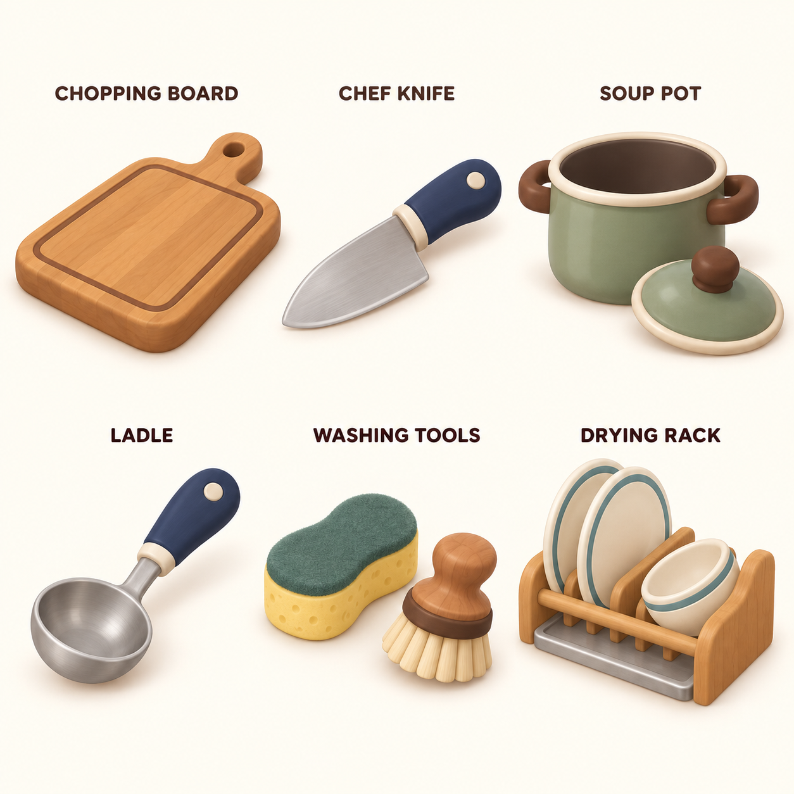
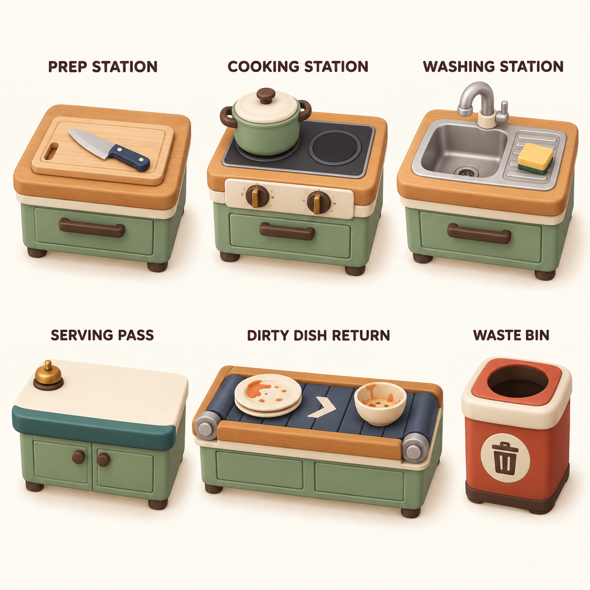
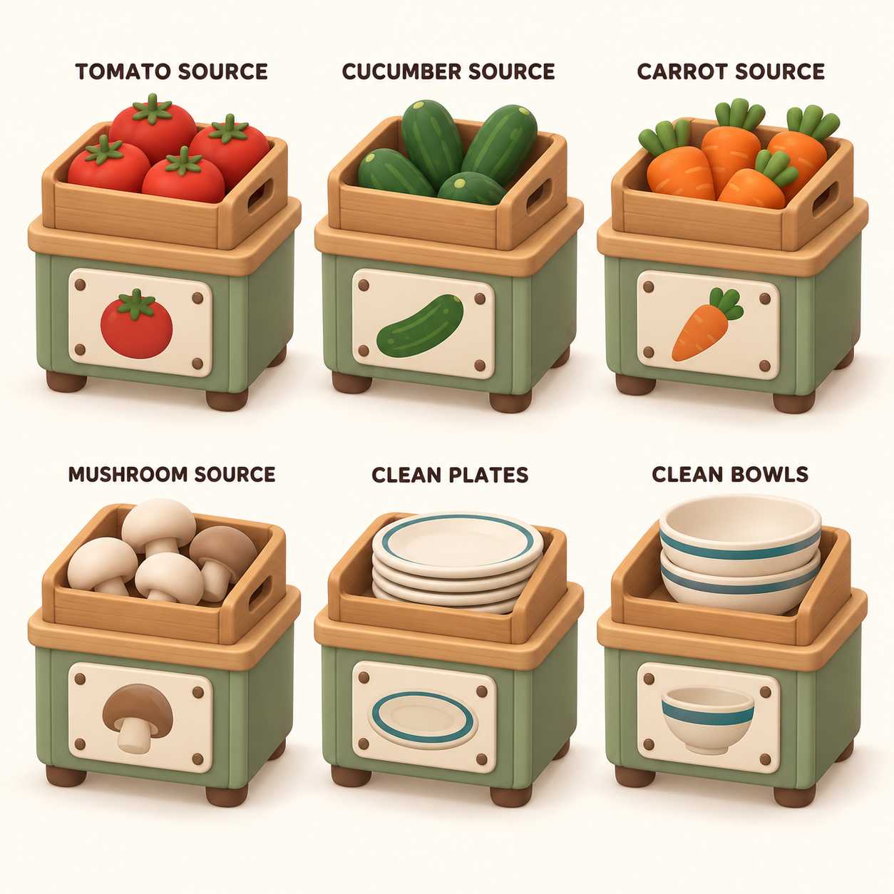
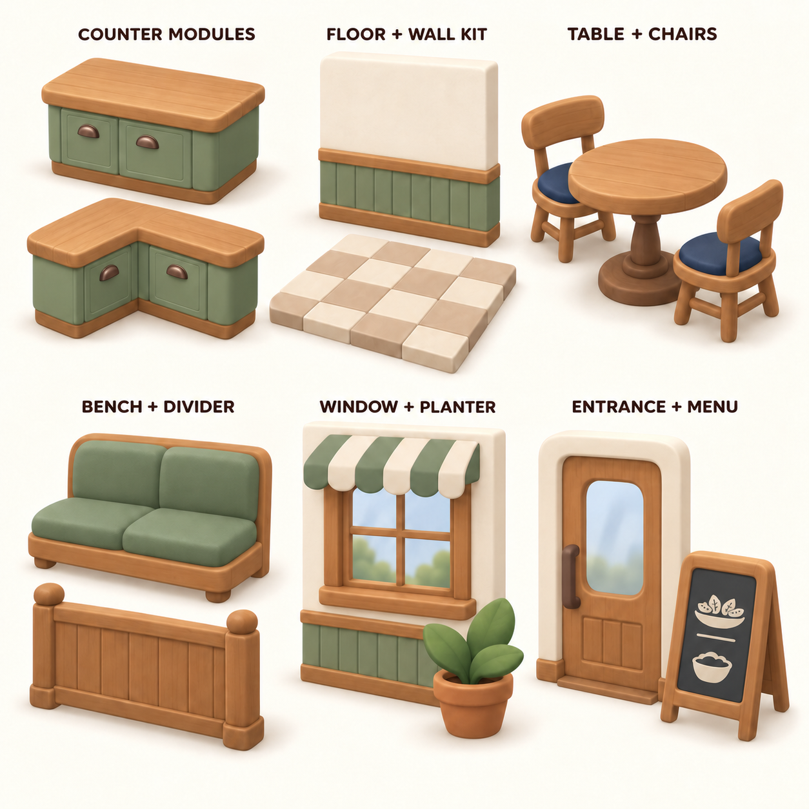

Café previewThe character, food and furniture styles brought together in one café scene.An art-direction preview of the combined kit. The final room layout and interaction distances will be tested in Unity later.Open image ↗
IngredientsTomato, cucumber, carrot and mushroom—whole and chopped.Four ingredients, each shown whole and chopped. Compact piles and bold shapes keep the preparation states readable.Open image ↗
DishesTwo recipes, with matching clean and dirty plate/bowl states.Salad uses only tomato and cucumber. Soup uses carrot and mushroom. The plate and bowl each have clean, served and dirty appearances.Open image ↗
UtensilsBoard, knife, pot, ladle, washing tools and dish rack.Thick handles, broad rims and simple shapes suit the chefs’ small animal paws.Open image ↗
StationsPrep, cooking, washing, serving, dish return and disposal.Low worktops and visible working surfaces for preparation, cooking, washing, serving and dish return. The conveyor is a proposed return option.Open image ↗
SuppliesFour ingredient sources, plus separate clean plate and bowl supplies.One reusable cabinet/crate family, distinguished by contents and large ingredient or dish pictograms.Open image ↗
EnvironmentCounters, room surfaces, tables, seating, windows and entrance.A small café kit built from straight and corner counters, quiet floor/wall surfaces, dining furniture, window and entrance modules.Open image ↗